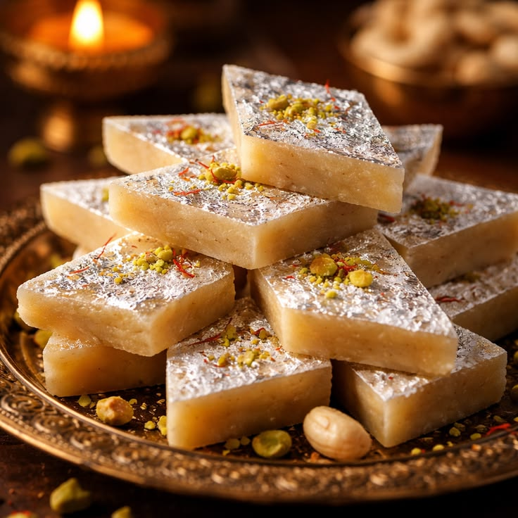
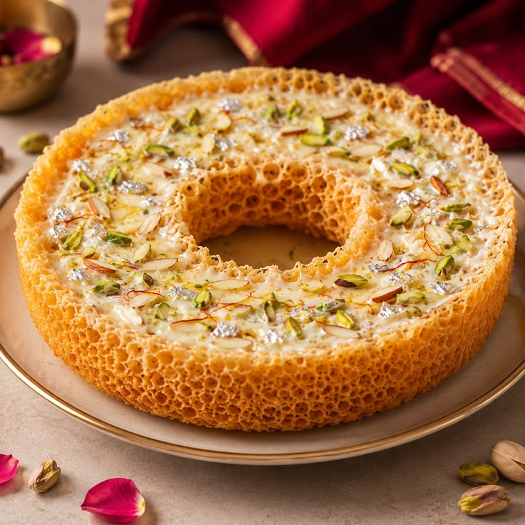
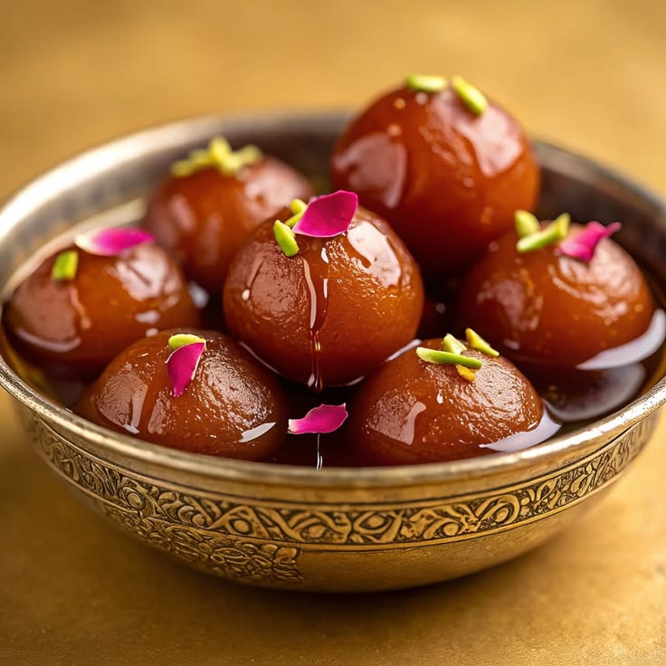
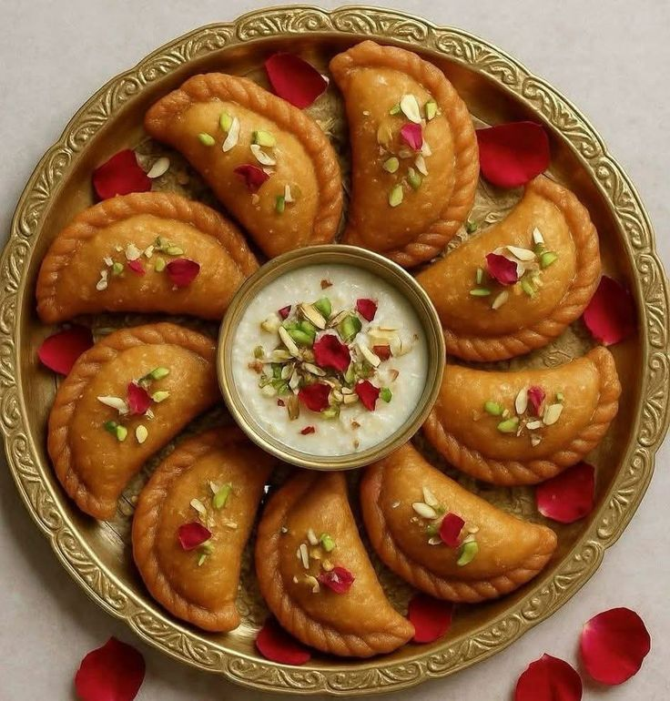

Kaju Katli
Ingedients
- Cashew (Kaju) – 1 cup
- Sugar – ½ cup
- Water – ¼ cup
- Ghee – 1 tsp
- Cardamom powder – ¼ tsp (optional)
- Silver varq – for decoration (optional)
Recipe
- Grind 1 cup cashews into a fine powder.
- Add ½ cup sugar and ¼ cup water to a pan and make a sugar syrup.
- Add the cashew powder to the syrup and mix well.
- Cook on low flame, stirring continuously.
- Add 1 tsp ghee and ¼ tsp cardamom powder.
- Cook until the mixture becomes a soft dough and leaves the sides of the pan.
- Transfer it to a greased surface and let it cool slightly.
- Knead gently and roll it into a thin sheet.
- Cut into diamond-shaped pieces.
- Add silver varq on top if desired and serve.

Ghevar
Ingedients
- All-purpose flour (Maida) – 1 cup
- Sugar – ½ cup
- Water – ¼ cup
- Ghee – 1 tsp
- Cardamom powder – ¼ tsp (optional)Almonds & pistachios – for garnish
- Silver varq – for decoration (optional)
Recipe
- Melt the ghee and let it cool slightly.
- Mix maida and ghee until smooth.
- Add milk and gradually add cold water to make a thin, lump-free batter.
- Heat oil or ghee in a deep, wide pan.
- Pour the batter slowly into the center of the hot oil.
- Continue adding batter until the ghevar reaches the desired thickness.
- Fry until golden and crispy.
- Carefully remove the ghevar and drain the excess oil.
- Prepare sugar syrup and pour it over the ghevar.
- Garnish with almonds, pistachios, and silver varq if desired.

Gulab Jamun
Ingedients
- Milk Powder – 1 cup
- All-purpose Flour (Maida) – 2 tbsp
- Milk – 3 to 4 tbsp
- Ghee – 1 tsp
- Sugar – 1 cup
- Water – 1 cup
- Cardamom Powder – 1/2 tsp
- Oil or Ghee – for deep frying
Recipe
- Mix milk powder, maida, and ghee in a bowl.
- Add milk gradually and knead gently to make a soft dough.
- Make small, smooth balls from the dough.
- Heat oil or ghee on low-medium flame and fry the balls until golden brown.
- For the syrup, boil sugar and water together.
- Add cardamom powder and cook for a few minutes.
- Put the fried gulab jamuns into the warm sugar syrup.
- Let them soak for 1–2 hours before serving.

Ghujiya
Ingedients
- All-purpose Flour (Maida) – 2 cups
- Ghee – 4 tbsp
- Khoya/Mawa – 1 cup
- Powdered Sugar – 1/2 cup
- Desiccated Coconut – 1/4 cup
- Chopped Almonds – 2 tbsp
- Chopped Pistachios – 2 tbsp
- Cardamom Powder – 1/2 tsp
- Raisins – 2 tbsp
- Water – as required
- Oil or Ghee – for deep frying
Recipe
- Mix maida and ghee, then add water gradually to make a soft dough.
- Heat khoya in a pan until lightly golden.
- Add powdered sugar, coconut, almonds, pistachios, raisins, and cardamom powder.
- Mix the filling well and let it cool.
- Divide the dough into small balls and roll each into a thin circle.
- Place some filling in the center and fold the circle into a half-moon shape.
- Seal the edges properly and make a decorative pattern along the edges.
- Deep-fry the gujiyas on medium-low heat until golden brown.
- Drain the excess oil and let them cool slightly.
- Serve the crispy gujiyas and enjoy!
